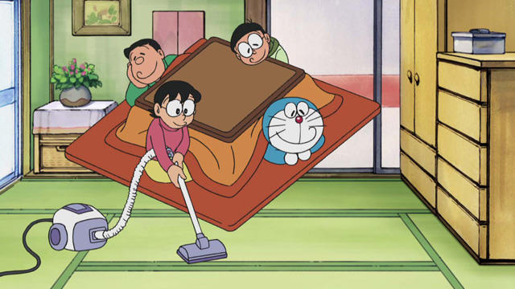

大雄家
概述
大雄的家位於「日本東京都練馬區月見台」（這是從小夫家的地址推得），一共兩層樓，外觀是紅色屋頂的房子，在大雄出生前改建過，不過地是跟別人租的，媽媽曾經對地租的事情唉聲嘆氣過。距離學校腳程大約要 15 分鐘。
地主曾經考慮把大雄家的地改建成公寓，不過在 14 年後，這裡會被徵收成公園的公廁，而大雄家則搬到附近的公寓去了。
院子

房屋外觀
大雄家的建築物外，有現代人比較少有的院子，有很多花草樹木，經常可以看到大雄幫忙除草或澆水的情形。媽媽洗完衣服會把衣服放在院子裡曬；而院子裡還有倉庫，放一些平常不會用到的東西。
1 樓

大雄家的起居室
進入家門後，就可看到擺在門口附近的電話。從走廊進入後，最近的一間房間是西式房間（會客室），這間房間平常並不常用，似乎也曾作為爸爸的書房使用。
再往前走，右側依序是廁所、盥洗室、浴室，乾溼分離；而左側則是起居室。大雄他們都在這裡會見客人、看電視、吃茶點，媽媽化妝與父母睡覺也是在這一間房間，可通往院子。起居室外就是通往 2 樓的樓梯，再往 1 樓內部走就是廚房與飯廳，旁邊有後門通往院子。
2 樓
大雄的房間